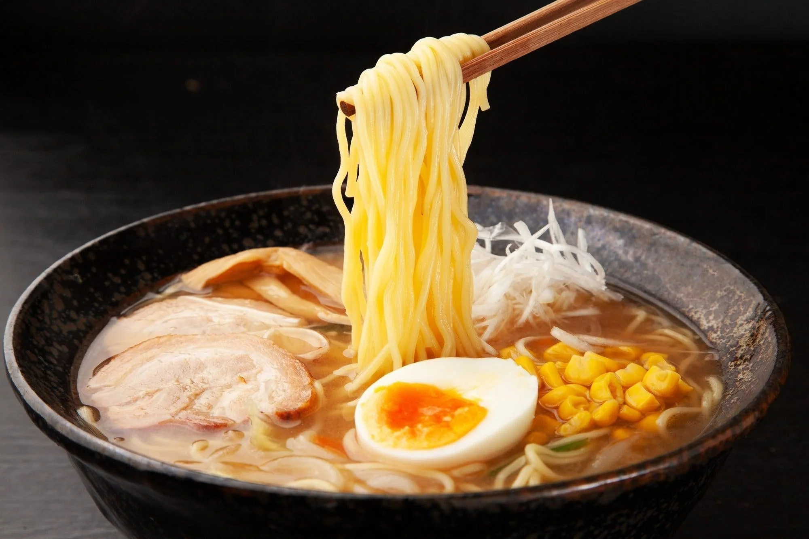
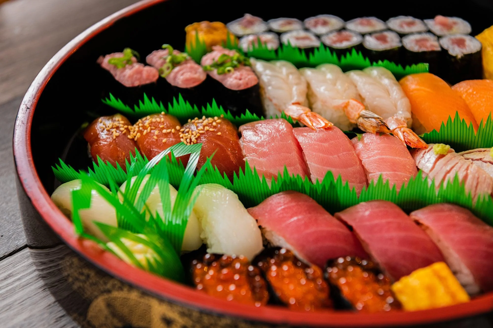
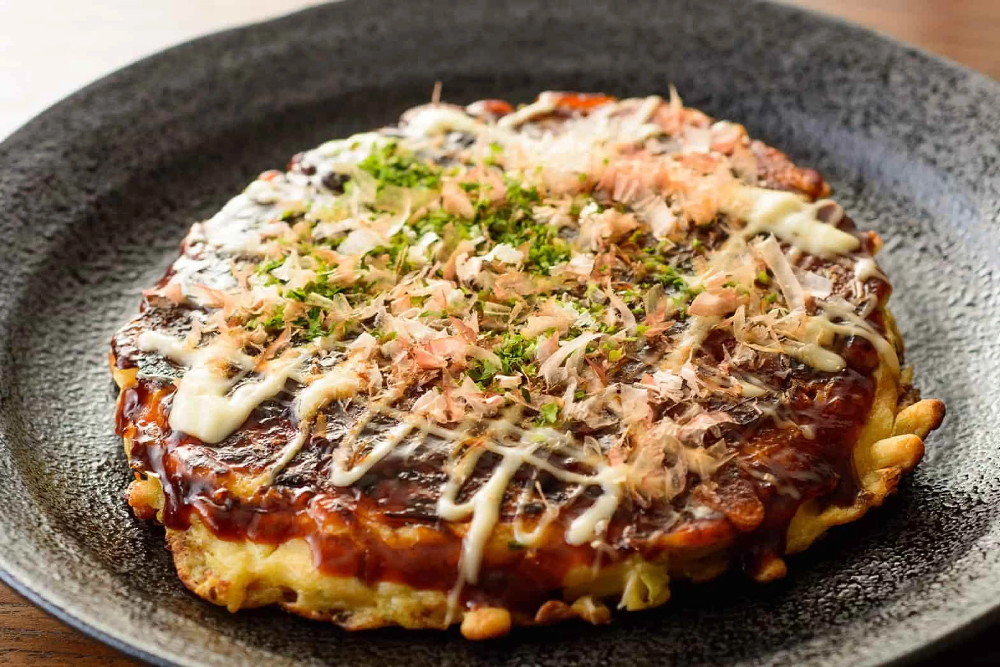
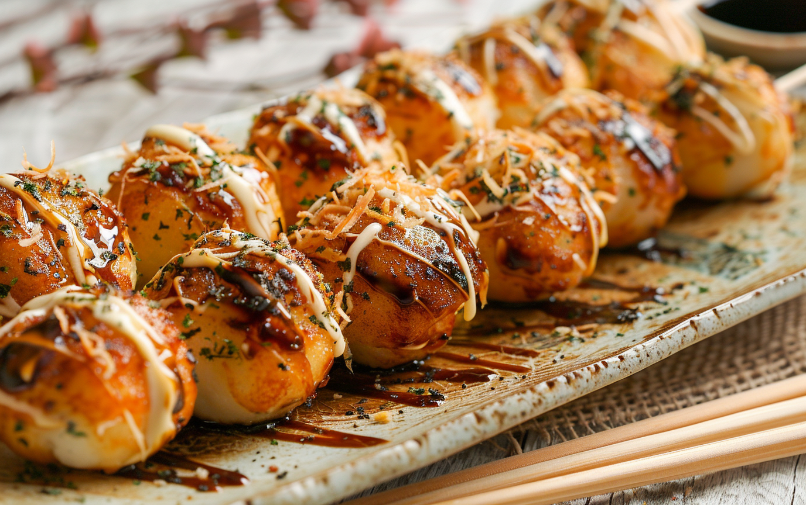
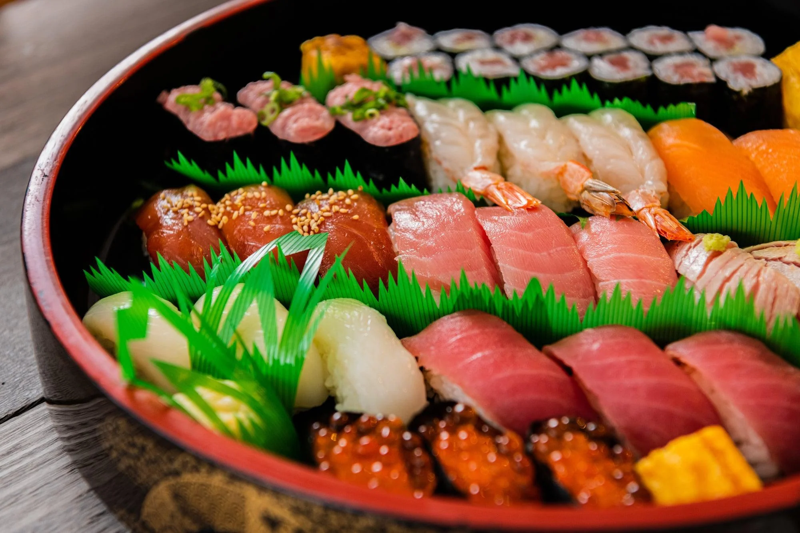

We offer a variety of exotic and enjoyable locations!
-
Fukuoka is home to Japan’s first ramen food stalls (yatai),
where you can enjoy the famous Hakata ramen in a lively street-side setting! 🍜 Hiroshima is home to Japan’s first-ever Mazda factory,
Hiroshima is home to Japan’s first-ever Mazda factory,
which started producing cars in 1931 and still operates today! 🚗 Kyoto has over 2,000 temples and shrines, including the famous
Kyoto has over 2,000 temples and shrines, including the famous
Fushimi Inari Shrine with its thousands of vermillion torii gates! ⛩️ Osaka is known as "Japan’s Kitchen" because of its amazing street food,
Osaka is known as "Japan’s Kitchen" because of its amazing street food,
including takoyaki (octopus balls) and okonomiyaki (savory pancakes)! 🍜🎌Experience all the authentic food we offer!
- 
A flavorful noodle soup with various broths like shoyu (soy sauce),
miso, and tonkotsu (pork bone). 🍜- 
Vinegared rice topped with fresh seafood, often served with
wasabi and soy sauce.🍣- 
A savory Japanese pancake filled with cabbage, meat,
and topped with a sweet-savory sauce. 🥞🔥- 
Ball-shaped snacks made of batter and filled with diced octopus,
topped with mayo and bonito flakes. 🐙 A crispy breaded pork cutlet served over rice with rich Japanese curry.🍛
A crispy breaded pork cutlet served over rice with rich Japanese curry.🍛Learn about transportation, etiquette, and budgeting.
 If you plan to travel between cities, the JR Pass is a cost-effective way to ride the
If you plan to travel between cities, the JR Pass is a cost-effective way to ride the
Shinkansen (bullet train), which connects major destinations across Japan.
- 